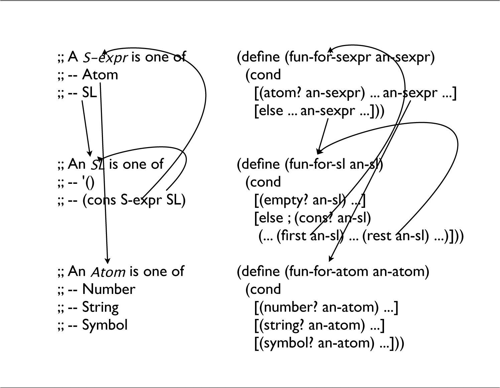

19.4 Designing with Intertwined Data
The jump from self-referential data definitions to collections of data definitions with mutual references is far smaller than the one from data definitions for finite data to self-referential data definitions. Indeed, the design recipe for self-referential data definitions—see chapter 9—needs only minor adjustments to apply to this seemingly complex situation:
1. The need for “nests” of mutually related data definitions is similar to the one for the need for self-referential data definitions. The problem statement deals with many distinct kinds of information, and one form of information refers to other kinds.
Before you proceed in such situations, draw arrows to connect references to definitions. Consider the left side of figure 118. It displays the definition for S-expr, which contains references to SL and Atom that are connected to their respective definitions via arrows. Similarly, the definition of SL contains one self-reference and one reference back to SL; again, both are connected by appropriate arrows.

Figure 118: Arrows for nests of data definitions and templates
Like self-referential data definitions, these nests of definitions also call for validation. At a minimum, you must be able to construct some examples for every individual definition. Start from clauses that do not refer to any of the other data definitions in the nest. Keep in mind that the definition may be invalid if it is impossible to generate examples from them.
2. The key change is that you must design as many functions in parallel as there are data definitions. Each function specializes for one of the data definitions; all remaining arguments remain the same. Based on that, you start with a signature, a purpose statement, and a dummy definition for each function.
3. Be sure to work through functional examples that use all mutual references in the nest of data definitions.
4. For each function, design the template according to its primary data definition. Use figure 51 to guide the template creation up to the last step. The revised last step calls for a check for all self-references and cross-references. Use the data definitions annotated with arrows to guide this step. For each arrow in the data definitions, include an arrow in the templates. See the right side of figure 118 for the arrow-annotated version of the templates.
Now replace the arrows with actual function calls. As you gain experience, you will naturally skip the arrow-drawing step and use function calls directly.
Note Observe how both nests—the one for data definitions and the one for function templates—contain four arrows, and note how pairs of arrows correspond to each other. Researchers call this correspondence a symmetry. It is evidence that the design recipe provides a natural way for going from problems to solutions.
5. For the design of the body, we start with those cond lines that do not contain natural recursions or calls to other functions. They are called base cases. The corresponding answers are typically easy to formulate or are already given by the examples. After that, you deal with the self-referential cases and the cases of cross-function calls. Let the questions and answers of figure 53 guide you.
6. Run the tests when all definitions are completed. If an auxiliary function is broken, you may get two error reports, one for the main function and another one for the flawed auxiliary definition. A single fix should eliminate both. Do make sure that running the tests covers all the pieces of the function.
Finally, if you are stuck in step 5, remember the table-based approach to guessing the combination function. In the case of intertwined data, you may need not only a table per case but also a table per case and per function to work out the combination.